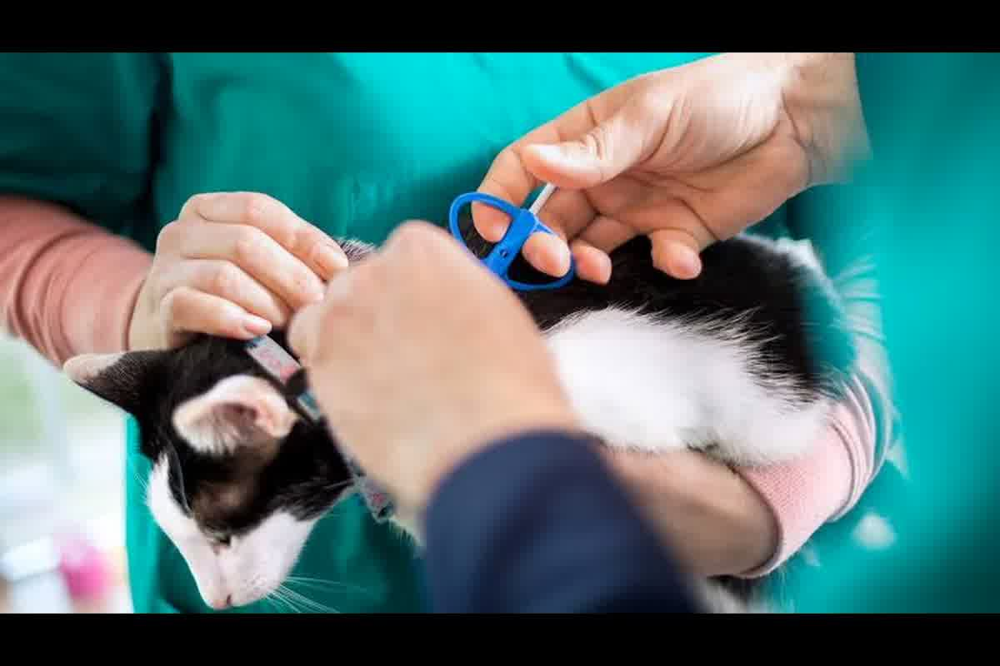
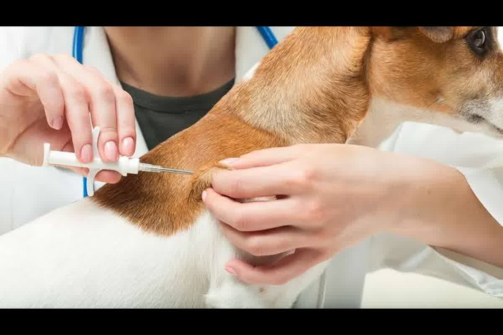

Guía técnica sobre el microchip ISO para mascotas en Perú. Requisitos internacionales, estándares FDX-B y el procedimiento correcto de implantación en Trujillo.

La implantación de un dispositivo de identificación que no cumpla con los protocolos de lectura global anula cualquier trámite de exportación antes de llegar a la frontera. Muchos propietarios en Trujillo asumen que cualquier chip comercial es válido, pero ignorar ¿qué es el microchip internacional y cómo lo tramitas en perú? bajo el estándar ISO resulta en el rechazo inmediato por parte de SENASA. El dispositivo debe ser una infraestructura sanitaria previa a la vacunación, no un accesorio de último minuto.
El microchip internacional es un transpondedor pasivo de radiofrecuencia (RFID) encapsulado en vidrio biocompatible que emite un código único de 15 dígitos al ser activado por un escáner. Para que este código sea reconocido en Europa, Asia o Norteamérica, el dispositivo debe operar bajo la tecnología FDX-B y cumplir con las normas ISO 11784 y 11785. En Perú, circulan chips de 9 o 10 dígitos que carecen de validez regulatoria fuera del país y que los lectores oficiales en aduanas extranjeras no pueden procesar.
La estructura del código no es aleatoria; los primeros tres dígitos corresponden al código del fabricante o al código de país, asegurando que no existan dos animales con el mismo registro en el mundo. La trazabilidad depende de que este número sea inalterable y legible durante toda la vida del animal, actuando como el ancla legal de su expediente de exportación.

El error que más vemos en consulta en Trujillo es vacunar contra la rabia antes de implantar el microchip. El Reglamento (UE) 576/2013 y la mayoría de normativas internacionales estipulan que la identificación debe preceder o ser simultánea a cualquier acto médico oficial. Si la fecha de vacunación registrada es anterior a la fecha de implantación del chip, la vacuna se considera inválida para el movimiento internacional y el animal deberá ser revunado, perdiendo semanas de tiempo logístico.
Este requisito garantiza que el médico veterinario certifica la salud y la inmunización de un individuo específico y verificable. En el momento de la consulta, procedemos primero con la lectura del chip para confirmar su ubicación y funcionamiento antes de proceder con la evaluación clínica. Un chip que ha migrado o que ha dejado de emitir señal inutiliza el pasaporte del animal y requiere el re-etiquetado sanitario inmediato bajo supervisión profesional.
La colocación del microchip internacional en Perú se realiza mediante una inyección subcutánea en la zona interescapular, un procedimiento que no requiere anestesia y que se ejecuta en cuestión de segundos. Tras la aplicación, el veterinario debe entregar una constancia o certificado de identificación que incluya las etiquetas originales del fabricante con el código de barras. Este documento es el que permite vincular al animal con su Certificado Zoosanitario de Exportación emitido por SENASA.
El registro del chip en bases de datos locales es un paso adicional de seguridad, pero lo que realmente importa para viajar es el respaldo físico en el carné de vacunación y en los certificados oficiales. El propietario debe conservar al menos dos etiquetas adhesivas del microchip para cualquier trámite futuro de duplicado de documentos. La pérdida de la trazabilidad entre el código del chip y los registros médicos suele ser la causa principal de retenciones en las inspecciones de salida en el Aeropuerto Jorge Chávez.
La verificación de la lectura es el paso crítico que se omite con frecuencia. Antes de comprar los pasajes, es necesario confirmar que el microchip es legible con escáneres universales y que no se ha desplazado a zonas del cuerpo donde sea difícil de detectar. Un chip que requiere un equipo especial de lectura obliga al propietario a viajar con su propio escáner, una complicación logística que se evita eligiendo dispositivos certificados desde el inicio del proceso en Trujillo.
La concordancia absoluta de los datos entre el certificado de implantación y los documentos de identidad del propietario previene observaciones en el sistema de SENASA. Un dígito mal transcrito en el expediente de exportación se traduce en un error documental irreversible que detiene el flujo del trámite ante la autoridad sanitaria peruana. La revisión minuciosa de cada número del microchip en los certificados de salud y vacunación es la única defensa real contra los retrasos administrativos en el punto de inspección.
La durabilidad del dispositivo está diseñada para superar los 25 años, cubriendo la expectativa de vida de cualquier perro o gato. Sin embargo, factores externos como traumatismos severos en la zona de aplicación pueden dañar el encapsulado de vidrio. Por ello, recomendamos realizar una lectura de control en cada visita anual al veterinario para asegurar que la infraestructura de identificación sigue operativa y lista para cualquier movimiento internacional inesperado.
La falta de un microchip estandarizado o un error en la fecha de su aplicación invalidará todos sus certificados de vacunación y detendrá su salida de Perú. Zoovet Travel realiza la implantación certificada y la auditoría de su expediente en Trujillo para garantizar la lectura correcta en cualquier aduana internacional. Diferencie su proceso con trazabilidad médica verificada y evite rechazos en el control de SENASA.